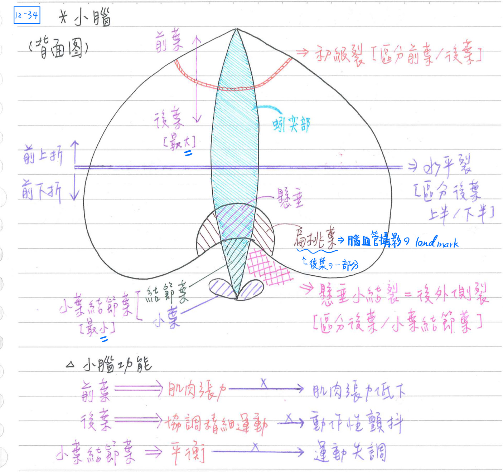
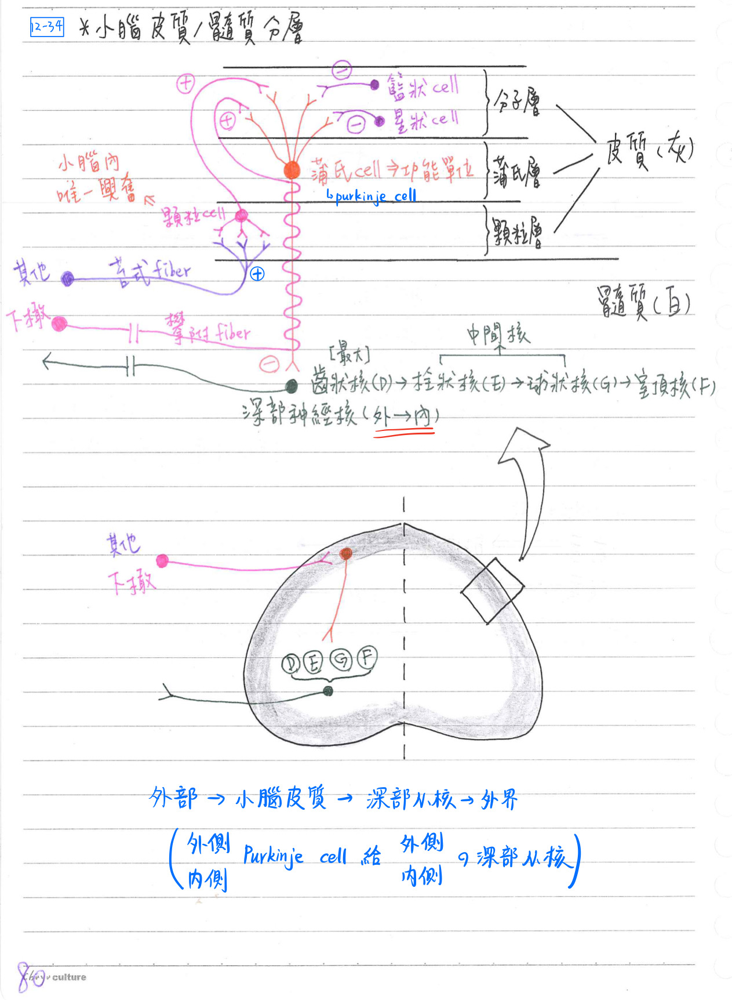
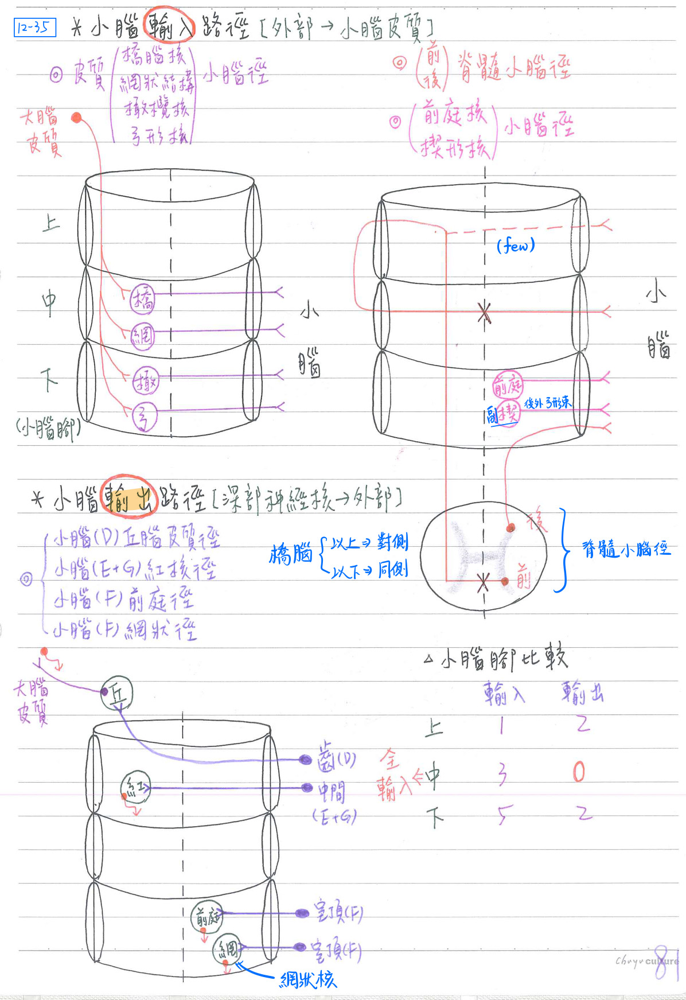

🧠 CNS-小腦
小腦-構造
- 大體構造：
- 左、右：兩半球(hemisphere)
- 中央：蚓突部(vermis)
- 功能分葉：
- 小葉結節葉(flocculonodular lobe)：體積最小
- 結節(nodule)：位於蚓突部之前下方
- 小葉(flocculus)：位結節葉之兩旁
- 前葉(anterior lobe)：蚓突及左右半球之前內側
- 初級裂(primary fissuer)：區隔前葉、後葉
- 後葉(posterir lobe)：體積最大；蚓突及左右球之後外側
- 懸垂小結裂(uvulonodular fiss ure)=後外側裂(posterolateral fissure)：區隔後葉、小葉結節葉
- 後葉之扁桃小葉(tonsil)：可作為腦血管攝影之界標(landmark)
- 小葉結節葉(flocculonodular lobe)：體積最小
- 胚胎發育順序：小葉→前葉→後葉

[重要]小腦-功能 [此處根據106考古+FC生理做過校正]
| 分葉 | 演化胚胎 | 功能 | deep nucleus | 路徑 |
|---|---|---|---|---|
| 小葉結節葉(Flocculonodular lobe) | 古小腦(archicerebellum) ≒前庭小腦(vestibulocerebellum) | 維持平衡 | 室頂核 | 由腦幹而來 前庭核小腦徑 楔形核小腦徑 |
| Vermis(蚓部) 小腦半球內側 (intermediate zone of hemisphere) | 舊小腦(paleocerebellum) ≒脊髓小腦(spinocerebellum) | 調節肌肉張力 監控運動的執行 內隱性記憶 | 球狀核、栓狀核 =中間核 | 由脊髓而來 前後脊髓小腦徑 |
| ★[108-2]小腦半球外側 (Lateral zone of hemisphere) | 新小腦(neocerebellun) ≒大腦小腦(cerebrocerebellum) | 協調精細運動 負責運動的計畫 | 齒狀核 | ★由大腦而來 皮質橋腦核小腦徑(P) 皮質網狀小腦徑(R) 皮質橄欖核小腦徑(O) 皮質弓狀核小腦徑(A) |
小腦-顯微構造(分層) [背圖，考fiber怎麼連]
外層：皮質(cortex)→具3層 <cf>大腦皮質：6層
- 分子層：籃狀細胞(basket)、星狀細胞(stellate)
- 蒲氏層[最重要]：★★蒲氏細胞(Purkinje cell)，形成功能單位之中心
- 顆粒層：★顆粒細胞(granule)，小腦唯一興奮性細胞
- 小腦表面之崎葉(folia)較大腦之腦回(gyrus)更多而細
內部：髓質(medulla) & 深部神經核，由外而內依序為：
- ★齒狀核(dentate)：最大核
- 栓狀核(emboliform)
- 球狀核(globose)
- 栓狀核+球狀核=中間核(interpositus)
- ★室頂核(fastigial)：最內側
特定輸入纖維(afferent fiber)
- 攀附纖維(climbing fiber)：
- ★橄欖小腦徑：源自延腦下橄欖核(平衡覺)之終端纖維
- 沿蒲氏細胞軸突攀爬至分子層→興奮蒲氏細胞
- 苔式纖維(mossy fiber):
- 其他小腦輸入徑之終端纖維
- 於顆粒層與諸多顆粒細胞形成薔薇結狀突觸(rosette, synaptic glomerulus)→興奮顆粒細胞
內部路徑(intrinsic pathway)：小腦皮質→深部神經核
💡
★外側給外側；內側給內側
- 由皮質之蒲氏細胞(抑制性神經元)傳導至深部神經核
- 內側蒲氏細胞→室頂核
- 中間蒲氏細胞→中間核(栓狀核、球狀核)
- 外側蒲氏細胞→齒狀核
- 少數蒲氏細胞→直接至外前庭核(延腦)
- 蒲氏細胞為唯一輸出細胞,末稍釋出GABA
- 籃狀細胞、星狀細胞為抑制性神經元，可抑制蒲氏細胞
- 顆粒細胞為興奮性神經元，可興奮蒲氏細胞

小腦傳導路徑 [基本方向：外部→Purkinje cell→深部神經核→外部]
輸入路徑(afferent pathway)：外部→小腦皮質
[hint：橋上的網子要趕工，先去前面歇一下]
💡
出發點在橋腦以上→對側聯繫
出發點在橋腦以下→同側聯繫
| 路徑名稱 | 出發點 | 途經 |
|---|---|---|
| 皮質橋腦核小腦徑 (cortico-pontocrebellar) | 大腦皮質 (對側聯繫) | ★[108-1]中小腦腳 |
| 皮質網狀結構小腦徑 (cortico-reticular-cerebellar) | 大腦皮質 (對側聯繫) | 中小腦腳 |
| 皮質橄欖核小腦徑 (cortico-olivary-cerebellar) | 大腦皮質 (對側聯繫) | ★下小腦腳 |
| 皮質弓形核小腦徑 (cortico-arcuato-cerebellar) | 大腦皮質 (對側聯繫) | 下小腦腳 ※前外弓形束(ant. ext. arcuate tract)：弓形核→對側小腦 |
| 前/腹側脊髓小腦徑 (anterior spinocbear) | 脊髓 (同側聯繫) | 主要：經上(對側)→中(對側)→★中(同側)小腦腳 次要：經★上(同側)小腦腳 有交叉至對側 |
| 後/背側脊髓小腦徑 (posterior spinocerebellar) | 脊髓 (同側聯繫) | ★下(同側)小腦腳 ★[108-1]未交叉至對側 |
| ★[108-1]前庭核小腦徑 (vestibulo-cerebellar) | 腦幹 (同側聯繫) | ★下小腦腳 |
| 楔形核小腦徑 (cuneo-cerebellar) | 腦幹 (同側聯繫) | 下小腦腳 ※後外弓形束(post. ext. arcuate tract)：副楔形核→同側小腦 ※不是楔形核！！！！ |
- 大腦皮質(cerebral cortex)⇒對側聯繫
- 脊髓(spinal cord)：同側聯繫
- 腦幹(brainstem)：同側聯繫
輸出路徑(efferent pathway)：深部神經元→外部；4條
| 路徑名稱 | 途經 | 後續路徑 |
|---|---|---|
| 小腦(齒狀核)-丘腦-皮質徑 (dento-thalamic-cortical) | ★[108-1]上小腦腳 (對側聯繫) | 皮質脊髓徑 (corticospinal tract) |
| 小腦(中間核)紅核徑(globose/emboliform-rubral) | 上小腦腳 (對側聯繫) | 紅核脊髓徑 (rubrospinal tract) |
| 小腦(室頂核)前庭徑 (fastigial vestibular) | 下小腦腳 (同側聯繫) | 前庭脊髓徑 (vestibulospinal tract) |
| 小腦(室頂核)網狀徑 (fastigial reticular) | 下小腦腳 (同側聯繫) | 網狀脊髓徑 (reticulospinal tract) |

小腦腳(cerebellar peduncle)：小腦對外橋樑，共3對
★上小腦腳(=brachium conjunctivum，結合臂)
- 主要輸出：
- 小腦(中間核)紅核徑(globose/emboliform-rubral)
- 小腦(齒狀核)丘腦徑(dento-thalamic-cortical)
- 少許輸入：
- 前脊髓小腦徑(anterior spinocerebellar)：源自脊髓下段(L4~S3)
中小腦腳(=brachium pontis，橋腦臂)
- 全輸入
- 皮質-橋腦-小腦徑(cortico-ponto-cerebellar)
- 皮質網狀小腦徑(cortico-reticula-cerebellar)
- 前脊髓小腦徑(anterior spinocerebellar)：源自脊髓下段(L4~S3)
★下小腦腳(=restiform body，繩狀體)
- 主要輸入：5條
- 前庭小腦徑(vestibulo-cercbellar)
- 後脊髓小腦徑(posterior spinocerebellar)：源自脊髓背核(T1~L3)
- 橄欖小腦徑(cortico-olivary cerebellar)：源自延腦下橄欖核
- 弓形小腦徑(cortico-arcuato-cerebellar)：源自延腦弓狀核
- 弓形小腦徑途經第4腦室腹側之髓紋(striae medullares)
- 楔狀核小腦徑(cuneo-cerebellar)：源自延腦副楔形核
- 少許輸出：2條
- 小腦(室頂核)前庭徑(fastigial vestibular)
- 小腦(室頂核)網狀徑(fastigial reticular)
★小腦病徵[103考英文]
- 運動失調(ataxia)：只要出現以下任一symptoms就算
- ★步伐失調(gait ataxia)
- ★衡量或辨距失調(dysmetria=pastpointing，指鼻測驗異常)
- 交替動作失調(dysdiadochokinesia)
- 動作的分解(decomposition of motion)→動作不流暢(須拆成一步一步才可以做)
- 咬字不清(scanning speech)：只能一個字一個字慢慢念
- 構音不良(dysarthria)
- 肌肉張力低下(hypotonia)、肌肉疲弱(asthenia)
- 顫抖(tremor)：★專注性顫抖(intentional tremor)、動作性顫抖(action trmeor)
- 反彈現象(rebound phenomenon)：無法適當地終結動作
- 眼球震顫(nystagmus)：跟眼皮跳不一樣
- 眼球震顫為小腦或內耳前庭系統之病徵
- 眼球震顫為小腦或內耳前庭系統之病徵